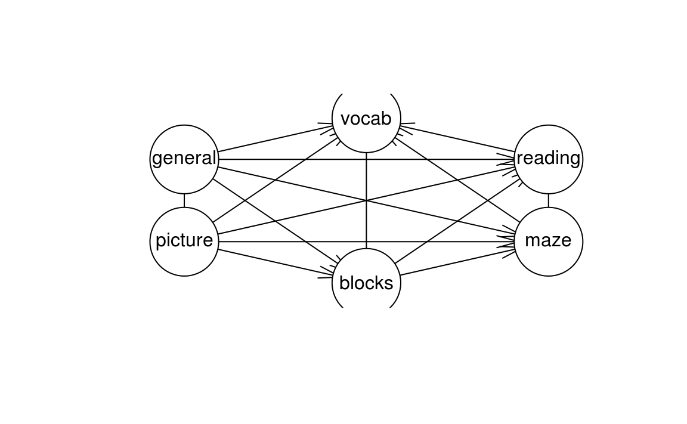
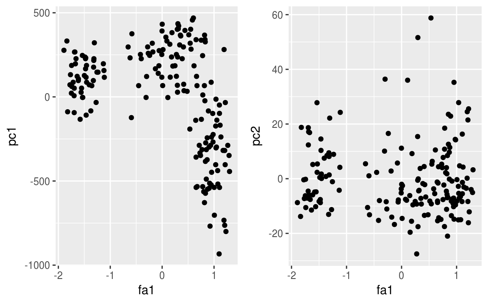
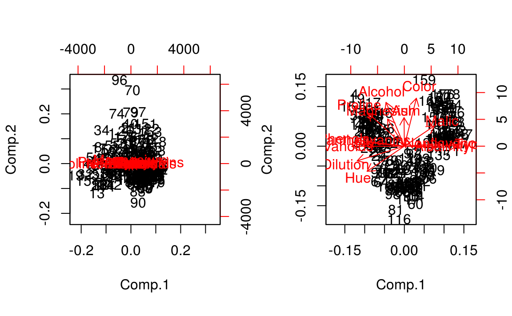
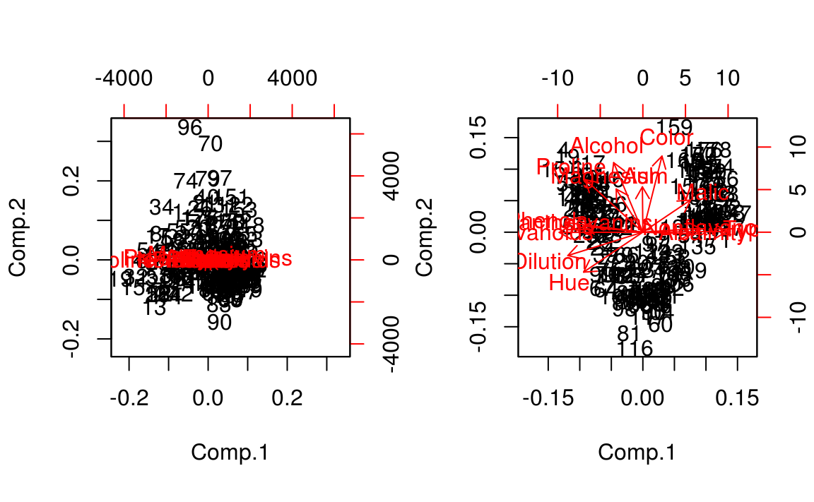

Clase 15 Componentes Principales 2
library(tidyverse)15.1 PCA probabilístico y Análisis de Factores
La formulación de PCA esta fundadda en una proyección lineal de los datos sobre un subespacio de dimensión menor. En esta sección veremos que PCA también se puede expresar como la solución de máxima verosimilitud de en un modelo probabilístico de variable latente.
El PCA probabilístico y el análisis de factores tienen las siguientes propiedades deseables:
Representan una distribución Gaussiana con restricciones en el que el número de parámetros se puede restringir, mientras que podemos capturar las correlaciones dominantes de los datos. En general una distribución Gaussiana multivariada tiene \(p(p+1)/2\) parámetros independientes en la matriz de covarianzas por lo que el número de parámetros crece de manera cuadrática con \(p\). Por otra parte si restringimos a una matriz de covarianzas diagonal tenemos solamente \(p\) parámetros pero no podemos entender las correlaciones. PCA probabilístico (y AF) es un punto medio en el que las \(q\) correlaciones más fuertes se pueden capturar mientras que el número de parámetros crece de manera lineal con \(p\). En el caso de CPP con \(q\) componentes: \(p\cdot q + 1 - q\cdot(q-1)/2\).
Podemos derivar un algoritmo EM para CPP que es eficente computacionalmente en situaciones en los que nos interesa calcular pocas componentes.
La combinación de un modelo probabilísitico y el algoritmo EM nos permite tratar con datos faltantes en la base de datos.
La existencia de la verosimilitud nos permite comparar modelos. Por ejemplo podemos hacer validación cruzada para elegir el número de componentes/factores que ajustan mejor a los datos.
Podemos utilizar el modelo para generar muestras de la distribución.
Para formular PCA probabilístico introducimos una variable latente \(X\) que corresponde al subespacio de componentes principales, suponemos \(X\sim N(0, I)\). Por otra parte, la distribución de la variable aleatoria observada \(Y\) condicional a la variable latente \(X\) es \(Y|X\sim N(Wx+\mu, \sigma^2I\)
Veremos que las columnas de \(W\) (dimensión \(D\times M\)) generan un subsepacio que correponde al subespacio de componentes principales.
El siguiente esquema explica el modelo PCA probabilístico desde el punto de vista generativo.

Desde este enfoque vemos que primero selecciona aleatoriamente un valor de la variable latente (\(x\)) y después muestreamos el valor observado condicional a la variable latente, en particular la variable obsevada (de dimensión \(D\)) se define usando una transformación lineal del espacio latente mas ruido Gaussiano aleatorio:
\[y=Wx + \mu + \epsilon\]
donde \(x\sim N(0, I)\) de dimensión \(M\) y \(\epsilon \sim N(0, \sigma^2I)\) de dimensión \(D\).
Ahora, si queremos usar máxima verosimilitud para estimar \(W\), \(\mu\) y \(\sigma^2\), necesitamos una expresión para la distribución marginal de la variable observada:
\[p(y)=\int p(y|x)p(x)dx\]
dado que este corresponde a un modelo Gaussiano lineal su distribución marginal es nuevamente Gaussiana con media \(\mu\) y matriz de covarianzas \(C=WW^T+\sigma^2I.\)
Entonces, la distribución \(p(y)\) depende de los parámetros \(W\), \(\mu\) y \(\sigma^2\); sin embargo hay una redundancia en la parametrización que corresponde a rotaciones en el espacio de coordenadas de las variables latentes. Para ver esto consideremos \(Q\) una matriz ortonormal de dimensión \(D \times D\) (\(Q\) es una matriz de rotación), \[Q^T Q = Q Q^T = I\] Al observar la igualdad \(C=WW^T+\sigma^2I\), notamos que no existe una única \(W\) que la satisfaga pues si definimos \(\tilde{W}=WQ\) tenemos que \[\tilde{W}\tilde{W}^T=WQQ^TW^T=WW^T\] y por tanto \(C=\tilde{W}{W}^T+\sigma^2I\). Este es un aspecto que consideraremos más a fondo en la parte de estimación.
15.1.0.1 Máxima verosimilitud
Consideramos la determinación de los parámetros usando máxima verosimilitud: \[ \begin{aligned} \log p(y)&=\sum_{i=1}^N\log p(y_j)\\ &=-\frac{ND}{2}-\frac{N}{2}\log(2\pi)\log|C| -\frac{1}{2}\sum_{j=1}^N(y_j-\mu)^TC^{-1}(y_j-\mu) \end{aligned} \]
Derivando e igualando a cero obtenemos \(\hat{\mu}=\bar{y}\), la maximización con respecto a \(W\) y \(\sigma^2\) es más difícil pero tiene forma cerrada (Tipping y Bishop 1999).
\[\hat{W}=U_{M}(L_M-\sigma^2I)^{1/2}R\]
donde \(U_{M}\) es una matriz de dimensión \(D \times M\) cuyas columnas corresponden a los \(M\) eigenvectores asociados a los mayores eigenvalores de la matriz de covarianzas \(S\). La matriz \(L\) de dimensión \(M \times M\) esta conformada por los eigenvalores correspondientes. Por último, R res cualquier matriz ortonormal de dimensión \(M \times M\).
Suponemos que los eigenvectores están ordenados en orden decreciente de acuerdo a sus eigenvalores correspondientes \(u_1,...,u_M\), en este caso las columnas de \(W\) definen el subespacio de PCA estándar. Por su parte, la solución de máxima verosimilitud para \(\sigma^2\) es:
\[\hat{\sigma^2}=\frac{1}{D-M}\sum_{j=M+1}^D \lambda_j\]
notemos que \(\hat{\sigma}^2\) es la varianza promedio asociada a las dimensiones que no incluimos.
Ahora, como R es ortogonal se puede interpretar como una matriz de rotación en el espacio de variables latentes. Por ahora, pensemos \(R=I\) notamos que las columnas de \(W\) son los vectores de componentes principales escalados por los parámetros de varianza \(\lambda_i-\sigma^2\), para ver la interpretación notemos que en la suma de Gaussianas independientes las varianzas son aditivas. Por tanto, la varianza \(\lambda_i\) en la dirección de un eigenvector \(u_i\) se compone de la contribución \((\lambda_i-\sigma^2)\) de la proyección del espacio latente (varianza 1) al espacio de los datos a través de la columna correspondiente de \(W\) mas la contribución del ruido con varianza isotrópica \(\sigma^2\).
15.1.0.2 Observaciones
El método convencional de PCA se suele describir como una proyección de los puntos en un espacio de dimensión \(D\) en un subespacio de dimensión \(M\).
PCA probabilístco se expresa de manera más natural como un mapeo del espacio latente al espacio de los datos observados.
Una función importante de PCA probabilítico es definir una distribución Gaussiana multivariada en donde el número de grados de libertad se puede controlar al mismo tiempo que podemos capturar las correlaciones más importantes de los datos.
PCA convencional corrresponde al límite \(\sigma^2 \to 0\)
PCA probabilístico se puede escribir en términos de un espacio latente por lo que la implementación del algoritmo EM es una opción natural. En casos donde \(M<<D\) la estimación mediante EM puede ser más eficiente.
Debido a que tenemos un modelo probabilitico para PCA podemos trabajar con faltantes (MCAR y MAR) marginalizando sobre la distribución de los no observados. El manejo de faltantes es otra ventaja de la implementación EM.
El algoritmo EM se puede extender al caso de Análisis de factores para el cuál no hay una solución cerrada.
15.1.1 Análisis de factores
El análisis de factores es muy similar a PCA probabilístico, la diferencia radica en que en la distribución condicional de \(Y|X\) la matriz de covarianza se supone diagonal en lugar de isotrópica:
\[Y|X \sim N(Wx + \mu, \Psi)\]
Donde \(\Psi\) es una matriz diagonal de dimensión \(D \times D\). Al igual que en PCA probabilístico, el modelo de FA supone que las variables observadas son independientes dado las latentes. En escencia el análisis de factores está explicando la estructura de covarianza observada representando la varianza
independiente asociada a cada variable en la matriz \(W\) y capturando la varianza compartda en \(W\).
La distribución marginal de las variables observadas es \(X\sim N(\mu, C)\) donde \[C=WW^T+\Psi.\]
De manera similar a PCA probabilístico el modelo es invariante a rotaciones en el espacio latente.
15.2 Análisis de factores (descripción tradicional)
Trataremos ahora con análisis de factores, los modelos que veremos se enfocan en variables observadas y latentes continuas. La idea esencial del análisis de factores es describir las relaciones entre varias variables observadas (\(Y=Y_1,...,Y_p\)) a través de variables latentes (\(X_1,...,X_q\)) donde \(q < p\). Como ejemplo consideremos una encuesta de consumo de hogares, donde observamos el nivel de consumo de \(p\) productos diferentes. Las variaciones de los componentes de \(Y\) quizá se puedan explicar por 2 o 3 factores de conducta del hogar, estos podrían ser un deseo básico de comfort, o el deseo de alcanzar cierto nivel social u otros conceptos sociales. Es común que estos factores no observados sean de mayor interés que las observaciones en si mismas.
En la gráfica inferior vemos un ejemplo en educación donde las variables vocab, reading, maze,… corresponden a las variables observadas mientras que \(X_1\) y \(X_2\) son las variables latentes. Observamos que añadir estructura al problema resulta en una simplificación del modelo.

En ocasiones, el análisis de factores se utiliza como una técnica de reducción de dimensión que esta basada en un modelo. Idealmente, toda la información en la base de datos se puede reproducir por un número menor de factores.
15.2.1 El modelo
Sea \(Y = (Y_1,...,Y_p)^T\) un vector de variables aleatorias observables donde todas las variables son cuantitativas. Supongamos que cada \(Y_j\) en \(Y\) (\(j=1,...,p\)) satisface: \[Y_j = \sum_{k=1}^K \lambda_{jk} X_k + u_j\] donde * \(X_k\) son los factores comunes (variables aleatorias continuas no observables).
\(u_j\) son errores (aleatorios).
\(\lambda_{jk}\) son las cargas de la variable \(j\) en el factor \(k\), (parámetros).
En notación matricial el modelo se escribe: \[Y_{p\times 1} = \Lambda_{p\times K} X_{K\times 1} + U_{p\times 1}\] donde \(\Lambda, X\) y \(U\) no son observadas, únicamente observamos \(Y\).
Adicionalmente, tenemos los siguientes supuestos:
\(X \perp U\), esto es, los errores y los factores son independientes.
\(E(X)=E(U)=0\).
\(Cov(X) = I_k\) (modelo ortogonal de factores) ésto se ve en la gráfica pues no hay arcos que unan a \(X_1\) y \(X_2\).
\(Cov(U) = \Psi\), donde \(\Psi\) es una matriz diagonal (\(p \times p\)).
Típicamente, se asume que \(U\) y \(X\) son Normales multivariadas. ¿Cómo vemos que \(Y_i \perp Y_j|X\)
Lo que buscamos es explicar la relación entre las variables observadas a través de las variables latentes, las relaciones que buscamos explicar están resumidas en la matriz de varianzas y covarianzas. En nuestro ejemplo la matriz es la siguiente:
ability.cov$cov
#> general picture blocks maze reading vocab
#> general 24.64 5.99 33.5 6.02 20.75 29.70
#> picture 5.99 6.70 18.1 1.78 4.94 7.20
#> blocks 33.52 18.14 149.8 19.42 31.43 50.75
#> maze 6.02 1.78 19.4 12.71 4.76 9.07
#> reading 20.75 4.94 31.4 4.76 52.60 66.76
#> vocab 29.70 7.20 50.8 9.07 66.76 135.29y la matriz de correlaciones es:
cov2cor(ability.cov$cov)
#> general picture blocks maze reading vocab
#> general 1.000 0.466 0.552 0.340 0.576 0.514
#> picture 0.466 1.000 0.572 0.193 0.263 0.239
#> blocks 0.552 0.572 1.000 0.445 0.354 0.356
#> maze 0.340 0.193 0.445 1.000 0.184 0.219
#> reading 0.576 0.263 0.354 0.184 1.000 0.791
#> vocab 0.514 0.239 0.356 0.219 0.791 1.000Entonces, volviendo al modelo examinemos que implicaciones tiene en la matriz de varianzas y covarianzas de las variables aleatorias observables. Denotemos la matriz de varianzas y covarianzas por \(\Sigma = Var(Y)\) y la expresaremos en términos de los parámetros del modelo.
\[\Sigma = \Lambda \Lambda^T + \Psi\]
Los términos en la diagonal de \(\Sigma\) (varianzas de cada variable observada) son:
\[Var(Y_j) = \sum_{k= 1}^K \lambda_{jk}^2 + \Psi_{jj}\] \[= comunalidad + unicidad\]
La comunalidad de la variable \(Y_j\) dada por \(\sum_{k= 1}^K \Lambda^2(j,k)\) es la varianza que comparte esta variable con otras variables por medio de los factores, mientras que la unicidad \(\Psi(j,j)\) es la varianza de la variable \(j\) que no comparte con el resto. Un buen análisis de factores tiene comunalidades altas y unicidades bajas (relativamente).
Los términos fuera de la diagonal están dados por:
\[Cov(Y_j, Y_i)= \sum_{k=1}^K\lambda_{jk}\lambda_{ik}\]
 Sea \(X \sim N(0, 1), u_1 \sim N(0,1),u_2 \sim N(0,2)\). Definimos \[Y_1 = X + u_1\] \[Y_2 = -X+u_2\]
Sea \(X \sim N(0, 1), u_1 \sim N(0,1),u_2 \sim N(0,2)\). Definimos \[Y_1 = X + u_1\] \[Y_2 = -X+u_2\]
Comunalidades:
Unicidades:
Descomposición de la matriz de varianzas y covarianzas:
Ejemplo: Pruebas de habilidad.
ability_fa <- factanal(factors = 2, covmat = ability.cov, rotation = "none")
ability_fa
#>
#> Call:
#> factanal(factors = 2, covmat = ability.cov, rotation = "none")
#>
#> Uniquenesses:
#> general picture blocks maze reading vocab
#> 0.455 0.589 0.218 0.769 0.052 0.334
#>
#> Loadings:
#> Factor1 Factor2
#> general 0.648 0.354
#> picture 0.347 0.538
#> blocks 0.471 0.748
#> maze 0.253 0.408
#> reading 0.964 -0.135
#> vocab 0.815
#>
#> Factor1 Factor2
#> SS loadings 2.420 1.162
#> Proportion Var 0.403 0.194
#> Cumulative Var 0.403 0.597
#>
#> Test of the hypothesis that 2 factors are sufficient.
#> The chi square statistic is 6.11 on 4 degrees of freedom.
#> The p-value is 0.19115.2.2 Estimación del modelo
Antes de adentrarnos en la estimación vale la pena considerar dos aspectos:
Rotaciones: Al observar la igualdad \(\Sigma = \Lambda\Lambda^T + \Psi\), notamos que no existe una única \(\Lambda\) que la satisfaga. Sea \(Q\) una matriz ortonormal de dimensión \(K \times K\) (\(Q\) es una matriz de rotación), \[Q^T Q = Q Q^T = I\] Si \(\Lambda\) es tal que \(Y = \Lambda X + U\) y \(\Sigma = \Lambda\Lambda^T + \Psi\) entonces, \[Y=(\Lambda Q)(Q^TX) + U\] \[\Sigma = (\Lambda Q) (\Lambda Q)^T + \Psi = \Lambda\Lambda^T + \Psi\] por lo tanto, \(\Lambda_1 = (\Lambda Q)\) y \(X_1 = Q^TX\) también son una solución para el modelo. Esto nos dice, que cualquier rotación de las cargas nos da una solución. Hay amplia literatura en este tema, típicamente la elección de una rotación busca mejorar la interpretación.
- ¿Cuántos factores?: No hay una respuesta directa a la pregunta pero para aspirar a contestarla respondamos primero: ¿Cuántos factores puedo estimar? Contemos el número de parámetros que vamos a estimar y veamos los grados de libertad:
- Parámetros en \(\Sigma:p(p+1)/2\)
- Parámetros en \(\Lambda\) y \(\Psi:pK + p\)
- Restricciones necesarias para fijar la rotación: \(K(K-1)/2\)
- Grados de libertad: \(d = p(p+1)/2 - (pK + p - K(K-1)/2)\)
Si \(d < 0\), no podemos estimar el modelo, por lo tanto el mayor número de factores que puedo estimar depende del número de variables observadas. Por ejemplo si \(p = 5\), únicamente podemos estimar modelos con 1 ó 2 factores.
Volviendo a la pregunta original: ¿Cuántos factores debo modelar? La respuesta depende del objetivo del análisis de factores, en ocasiones se desea utilizar las variables latentes como un _resumen__ de las variables observadas e incorporarlas a ánalisis posteriores, en este caso es conveniente analizar el porcentaje de la varianza en las variables observadas que se puede explicar con los factores, por ejemplo si el tercer factor no contribuye de manera importante a explicar la variabilidad observada, el modelo con dos factores sería preferible. Por otra parte, si asumimos normalidad (\(X\sim N(0, I), U\sim N(0, \Psi)\)) podemos comparar la verosimilitud (o AIC, BIC) de los modelos con distinto número de factores y elegir de acuerdo a este criterio.
Una vez que fijamos el número de factores, hay varios métodos de estimación, el más popular implementa el algoritmo EM, sin embargo este método requiere supuestos de normalidad. Dentro de los métodos que no requieren supuestos adicionales está el método de factores principales.
15.2.2.1 Método del factor principal
En adelante utilzamos la matriz de covarianzas muestral, \[S = \frac{1}{N} \sum_{n = 1}^N(X_n-\bar{X})(X_n-\bar{X})^T\] como la estimación de la matriz de covarianzas poblacional \(\Sigma\). Usualmente no es posible encontrar matrices \(\hat{\Lambda},\hat{\Psi}\) tales que la igualdad \(S = \hat{\Lambda}\hat{\Lambda}^T+\hat{\Psi}\) se cumpla de manera exacta. Por tanto el objetivo es encontrar matrices tales que se minimice \(traza(S-\hat{S})^T(S-\hat{S})\) donde \(\hat{S} = \hat{\delta}\hat{\delta}^T+\hat{Psi}\). El algoritmo del método del factor principal funciona de la siguiente manera:
Inicializa \(\hat{\Psi}\) (cualquier valor)
\(\hat{\Psi}=\) los \(K\) mayores eigenvectores de la matriz \[(\hat{S} - \hat{\Psi})\] Nos fijamos en esta diferencia porque nos interesa explicar las covarianzas a través de los factores comunes.
\(\hat{\Psi} = diag(S-\hat{\Lambda}\hat{\Lambda}^T)\)
Los pasos 2 y 3 se repiten hasta alcanzar convergencia. Este algoritmo no es muy popular debido a que la convergencia no está asegurada, se considera lento y los valores iniciales de \(\Psi\) suelen influenciar la solución final.
15.2.3 Análisis de factores de máxima verosimilitud
Supongamos ahora que, \[X \sim N(0, I)\] \[U \sim N(0,\Psi)\] Entonces la distribución del vector de variables aleatorias observables \(Y\) es \[Y \sim N(\mu + \Lambda x, \Sigma)\] donde \(\Sigma = \Lambda \Lambda^T + \Psi\) (igual que antes). Es fácil ver que la distribución condicional de \(Y\) es: \[Y|X \sim N(\mu + \Lambda x, \Psi)\] por tanto, se cumple las independencias condicionales que leemos en la gráfica. Ahora, la log verosimilitud es: \[log L(\Sigma) = - \frac{np}{2} log(2\pi) - \frac{n}{2}log det(\Sigma) - \frac{n}{2}tr(\Sigma^{-1}S)\] buscamos parámetros\(\hat{\Lambda}\) y \(\hat{Psi}\) que maximizen esta log-verosimilitud, sin embargo, estos parámetros no se pueden separar facilmente (es decir maximizar individualmente) ya que están relacionados a través de \(det(\Sigma)\) y \(\Sigma^{-1}\). No hay una forma cerrada para encontrar los parámetros de máxima verosimilitud de la expresión anterior. Recurrimos entonces al algoritmo EM, donde en el paso E rellanamos los valores de \(X\) y en el paso M estimamos \(\Lambda\) y \(\Psi\) utilizando que éstos parámetros se pueden separar si conozco \(X\).
15.2.4 Evaluación del modelo
Volviendo al número de factores, una vez que hacemos supuestos de normalidad podemos calcular la devianza del modelo: \[D = n*(tr(\hat{\Sigma}^{-1}S) - log det(\hat{\Sigma}^{-1}S) - p)\] y el BIC. Por tanto, podemos comparar modelos con distintos factores utilizando este criterio. \[d = p - {1}{2}((p-q)^2 - (p+q))\] y por tanto \(BIC = D + d log N\).
library(psych)
#>
#> Attaching package: 'psych'
#> The following objects are masked from 'package:ggplot2':
#>
#> %+%, alpha
dev <- function(fit){
S <- fit$correlation
n <- fit$n.obs
p <- nrow(S)
Sigma <- (fit$loadings) %*% t(fit$loadings) + diag(fit$uniqueness)
mat.aux <- solve(Sigma) %*% S
D <- n * (tr(mat.aux) - log(det(mat.aux)) - p)
return(D)
}
BIC <- function(fit){
p <- nrow(fit$loadings)
q <- ncol(fit$loadings)
v <- p - 1/2 * ((p - q) ^ 2 - (p + q))
D <- dev(fit)
BIC <- D + v * log(fit$n.obs) / 2
return(BIC)
}
ability.fa.1 <- factanal(factors = 1, covmat = ability.cov,
rotation = "none")
ability.fa.2 <- factanal(factors = 2, covmat = ability.cov,
rotation = "none")
ability.fa.3 <- factanal(factors = 3, covmat = ability.cov,
rotation = "none")
BIC(ability.fa.1)
#> [1] 71.2
BIC(ability.fa.2)
#> [1] 11.1
BIC(ability.fa.3)
#> [1] 14.2Veamos también el porcentaje de la varianza observada que se puede explicar con los distintos modelos.
ability.fa.1
#>
#> Call:
#> factanal(factors = 1, covmat = ability.cov, rotation = "none")
#>
#> Uniquenesses:
#> general picture blocks maze reading vocab
#> 0.535 0.853 0.748 0.910 0.232 0.280
#>
#> Loadings:
#> Factor1
#> general 0.682
#> picture 0.384
#> blocks 0.502
#> maze 0.300
#> reading 0.877
#> vocab 0.849
#>
#> Factor1
#> SS loadings 2.443
#> Proportion Var 0.407
#>
#> Test of the hypothesis that 1 factor is sufficient.
#> The chi square statistic is 75.2 on 9 degrees of freedom.
#> The p-value is 1.46e-12
ability.fa.2
#>
#> Call:
#> factanal(factors = 2, covmat = ability.cov, rotation = "none")
#>
#> Uniquenesses:
#> general picture blocks maze reading vocab
#> 0.455 0.589 0.218 0.769 0.052 0.334
#>
#> Loadings:
#> Factor1 Factor2
#> general 0.648 0.354
#> picture 0.347 0.538
#> blocks 0.471 0.748
#> maze 0.253 0.408
#> reading 0.964 -0.135
#> vocab 0.815
#>
#> Factor1 Factor2
#> SS loadings 2.420 1.162
#> Proportion Var 0.403 0.194
#> Cumulative Var 0.403 0.597
#>
#> Test of the hypothesis that 2 factors are sufficient.
#> The chi square statistic is 6.11 on 4 degrees of freedom.
#> The p-value is 0.191
ability.fa.3
#>
#> Call:
#> factanal(factors = 3, covmat = ability.cov, rotation = "none")
#>
#> Uniquenesses:
#> general picture blocks maze reading vocab
#> 0.441 0.217 0.329 0.580 0.040 0.336
#>
#> Loadings:
#> Factor1 Factor2 Factor3
#> general 0.636 0.367 0.139
#> picture 0.350 0.766 -0.272
#> blocks 0.441 0.639 0.263
#> maze 0.236 0.325 0.509
#> reading 0.974 -0.109
#> vocab 0.811
#>
#> Factor1 Factor2 Factor3
#> SS loadings 2.382 1.249 0.427
#> Proportion Var 0.397 0.208 0.071
#> Cumulative Var 0.397 0.605 0.676
#>
#> The degrees of freedom for the model is 0 and the fit was 0Finalmente, volvamos a las rotaciones. La interpretación de los factores se facilita cuando cada variable observada carga principalmente en un factor, por ello, muchos de los métodos de rotación buscan acentuar esta característica:
Rotación varimax: Resulta en algunas cargas altas y otras bajas para cada factor, de manera que las cargas bajas se puedan ignorar en la interpretación.
Rotación promax: Esta es una rotación oblicua, lo que implica que se pierde la ortogonalidad de los factores. El resultado de esta rotación es que usualmente las cargas se vuelven incluso más extremas que con la rotación varimax.
ability.varimax <- factanal(factors = 2, covmat = ability.cov,
rotation = "varimax")
ability.promax <- factanal(factors = 2, covmat = ability.cov,
rotation = "promax")
cbind(ability.varimax$loadings, ability.promax$loadings) # cutoff = 0.1
#> Factor1 Factor2 Factor1 Factor2
#> general 0.499 0.543 0.3642 0.47041
#> picture 0.156 0.622 -0.0577 0.67120
#> blocks 0.206 0.860 -0.0915 0.93189
#> maze 0.109 0.468 -0.0537 0.50800
#> reading 0.956 0.182 1.0234 -0.09549
#> vocab 0.785 0.225 0.8112 0.0091115.2.5 Visualización
Cuando realizamos componentes principales es común querer proyectar los datos en las componentes. En el caso de AF no es tan sencillo porque los factores son aleatorios, pero hay métodos para calcular puntajes (scores).
Método de Bartlett. Supongamos que conocemos \(\Lambda\) y \(\Psi\), denotemos los puntajes del individuo \(i\) en los factores por \(x_i\), entonces si \(y_i\) es el vector de variables observables del i-ésimo individuo, tenemos que \(y_i\) dada \(x_i\) se distribuye \(N(\Lambda x_i, \Psi)\), por lo que la log-verosimilitud de la observación \(y_i\) esta dada por \[-\frac{1}{2} log|2\pi\Psi| - \frac{1}{2}(y_i- \Lambda f_i)^T \Psi^{-1}(y_i - \Lambda x_i)\] Derivando e igualando a cero se obtiene: \[\hat{x}_i = (\Lambda^T\Psi^{-1}\Lambda)\Lambda^T\Psi^{-1}y_i\]
Método de Thompson. Consideramos \(x_i\) aleatorio, i.e. \(X\sim N(0,I)\), entonces \(f|y\) se distribuye \(N(\Lambda^T\Psi^{-1}y, I-\Lambda^T \Psi^{-1}\Lambda)\) por lo que un estimador natural para \(x_i\) es \[\hat{x}_i = \Lambda^T\Psi^{-1}y_i\]
Ejemplo. La base de datos wine contiene medidas en 13 atributos diferentes de 180 vinos.
library(gridExtra)
wine <- read_csv("datos/wine.csv")
head(wine)
#> # A tibble: 6 x 14
#> Type Alcohol Malic Ash Alcalinity Magnesium Phenols Flavanoids
#> <int> <dbl> <dbl> <dbl> <dbl> <int> <dbl> <dbl>
#> 1 1 14.2 1.71 2.43 15.6 127 2.80 3.06
#> 2 1 13.2 1.78 2.14 11.2 100 2.65 2.76
#> 3 1 13.2 2.36 2.67 18.6 101 2.80 3.24
#> 4 1 14.4 1.95 2.50 16.8 113 3.85 3.49
#> 5 1 13.2 2.59 2.87 21.0 118 2.80 2.69
#> 6 1 14.2 1.76 2.45 15.2 112 3.27 3.39
#> # ... with 6 more variables: Nonflavanoids <dbl>, Proanthocyanins <dbl>,
#> # Color <dbl>, Hue <dbl>, Dilution <dbl>, Proline <int>
pc.wine.1 <- princomp(wine, scores = TRUE)
fa.wine <- factanal(wine, factors = 2, scores = "Bartlett")
fa.pc.wine <- data.frame(fa1 = fa.wine$scores[, 1], pc1 = pc.wine.1$scores[, 1],
fa2 = fa.wine$scores[, 2], pc2 = pc.wine.1$scores[, 2])
comp_1 <- ggplot(fa.pc.wine, aes(x = fa1, y = pc1)) +
geom_point()
comp_2 <- ggplot(fa.pc.wine, aes(x = fa1, y = pc2)) +
geom_point()
grid.arrange(comp_1, comp_2, ncol = 2)
pc.wine.2 <- princomp(wine, scores = T, cor = T)
fa.pc.wine <- data.frame(fa1 = fa.wine$scores[, 1], pc1 = pc.wine.2$scores[, 1],
fa2 = fa.wine$scores[, 2], pc2 = pc.wine.2$scores[, 2])
comp_1 <- ggplot(fa.pc.wine, aes(x = fa1, y = pc1)) +
geom_point()
comp_2 <- ggplot(fa.pc.wine, aes(x = fa2, y = pc2)) +
geom_point()
grid.arrange(comp_1, comp_2, ncol = 2)
par(mfrow=c(1,2))
biplot(pc.wine.1)
biplot(pc.wine.2)
# Ejemplo simulación
x1 <- rnorm(1000)
x2 <- x1 + 0.001 * rnorm(1000)
x3 <- 10 * rnorm(1000)
x <- data.frame(x1, x2, x3)
fact.x <- fa(x, factors = 1, covar = TRUE, fm ="ml")
pc.x <- princomp(x)
fact.x$loadings
#>
#> Loadings:
#> ML1
#> x1 0.999
#> x2 0.999
#> x3 0.789
#>
#> ML1
#> SS loadings 2.617
#> Proportion Var 0.872
pc.x$loadings
#>
#> Loadings:
#> Comp.1 Comp.2 Comp.3
#> x1 0.707 0.707
#> x2 0.707 -0.707
#> x3 1.000
#>
#> Comp.1 Comp.2 Comp.3
#> SS loadings 1.000 1.000 1.000
#> Proportion Var 0.333 0.333 0.333
#> Cumulative Var 0.333 0.667 1.000
y <- scale(x)
fact.y <- fa(y, factors = 1, fm ="ml")
pc.y <- princomp(y)
fact.y$loadings
#>
#> Loadings:
#> ML1
#> x1 0.999
#> x2 0.999
#> x3
#>
#> ML1
#> SS loadings 1.999
#> Proportion Var 0.666
pc.y$loadings
#>
#> Loadings:
#> Comp.1 Comp.2 Comp.3
#> x1 0.705 0.707
#> x2 0.705 -0.707
#> x3 -0.997
#>
#> Comp.1 Comp.2 Comp.3
#> SS loadings 1.000 1.000 1.000
#> Proportion Var 0.333 0.333 0.333
#> Cumulative Var 0.333 0.667 1.000
fact.y
#> Factor Analysis using method = ml
#> Call: fa(r = y, fm = "ml", factors = 1)
#> Standardized loadings (pattern matrix) based upon correlation matrix
#> ML1 h2 u2 com
#> x1 1.00 0.9975 0.0025 1
#> x2 1.00 0.9975 0.0025 1
#> x3 0.06 0.0035 0.9965 1
#>
#> ML1
#> SS loadings 2.00
#> Proportion Var 0.67
#>
#> Mean item complexity = 1
#> Test of the hypothesis that 1 factor is sufficient.
#>
#> The degrees of freedom for the null model are 3 and the objective function was 13.9 with Chi Square of 13848
#> The degrees of freedom for the model are 0 and the objective function was 7.59
#>
#> The root mean square of the residuals (RMSR) is 0
#> The df corrected root mean square of the residuals is NA
#>
#> The harmonic number of observations is 1000 with the empirical chi square 0.01 with prob < NA
#> The total number of observations was 1000 with Likelihood Chi Square = 7560 with prob < NA
#>
#> Tucker Lewis Index of factoring reliability = -Inf
#> Fit based upon off diagonal values = 1
#> Measures of factor score adequacy
#> ML1
#> Correlation of (regression) scores with factors 1
#> Multiple R square of scores with factors 1
#> Minimum correlation of possible factor scores 1 

En el ejemplo de simulación vemos que el análisis de componentes principales se alinea con la dirección de máxima varianza \(X_3\) mientras que el análisis de factores ignora el componente no correlacionado y captura el componente correlacionado \(X_2 + X_1\). Debido a que en FA modelamos diferentes unicidades \(u_j\) para cada \(Y_j\) el análisis de factores puede verse como un modelo para la estructura de correlación de \(Y_j\) en lugar de la estructura de covarianzas.